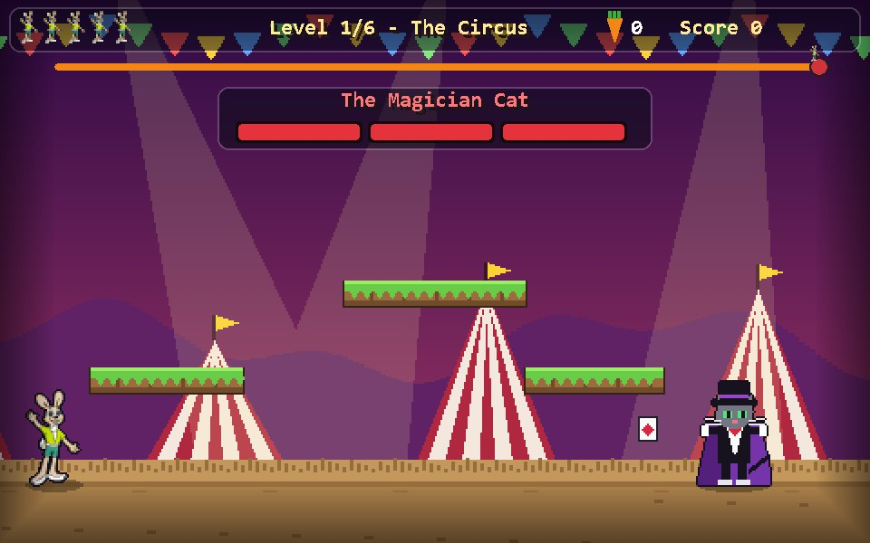
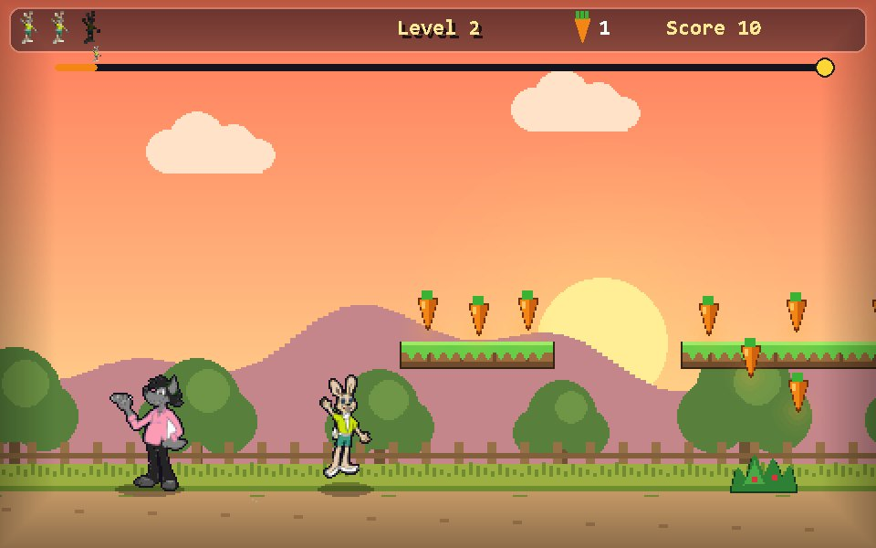
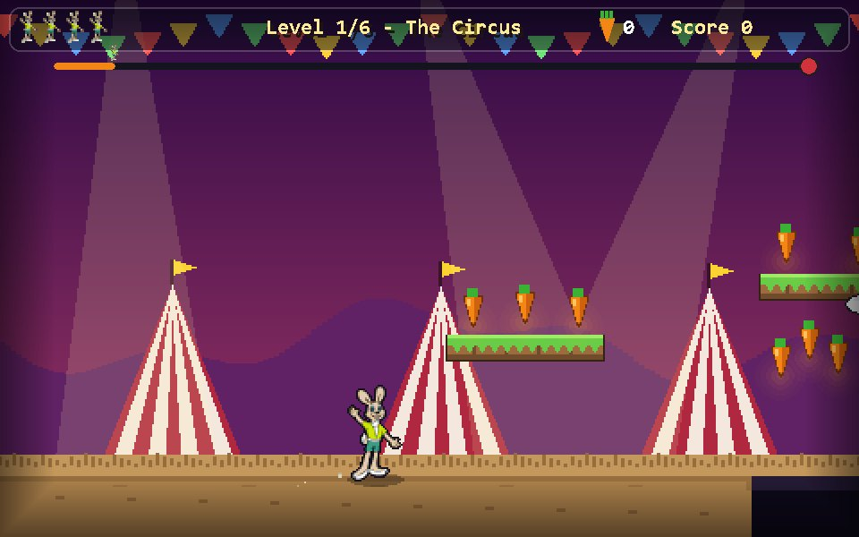
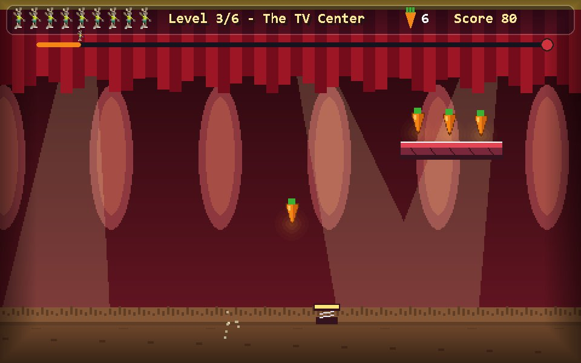
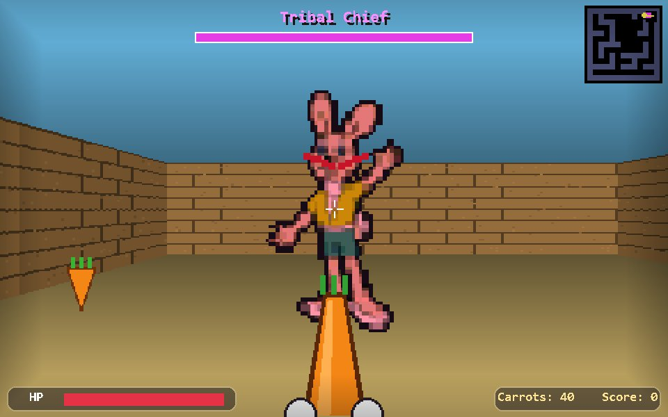
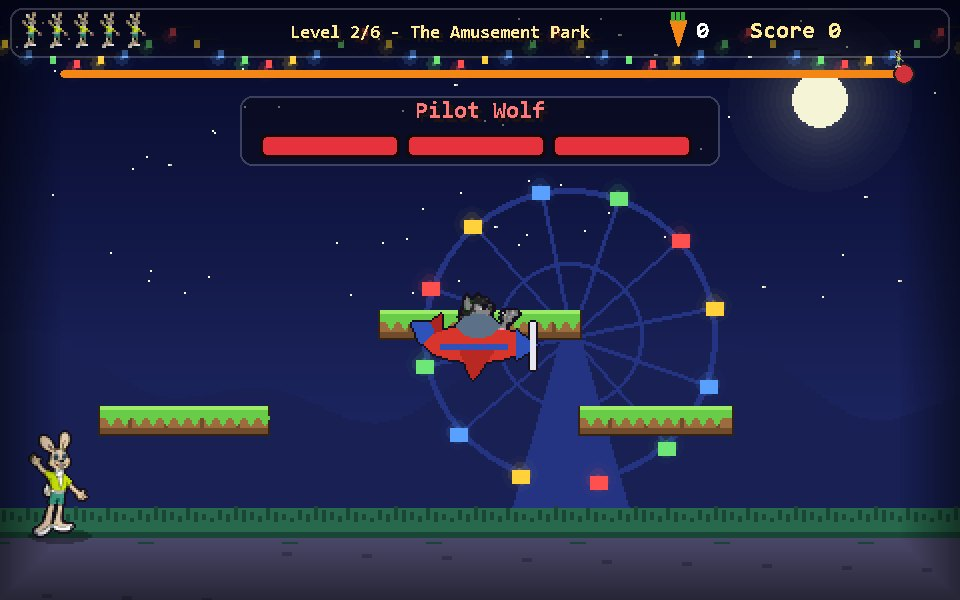
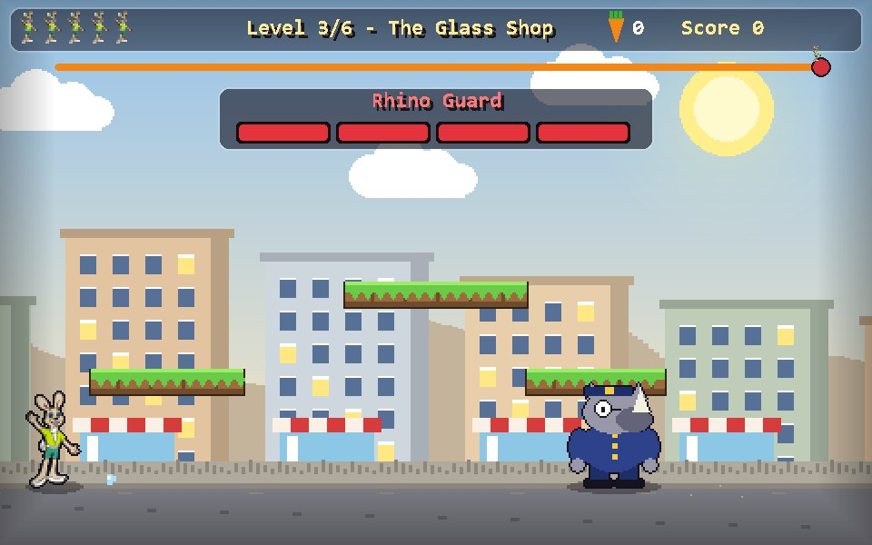
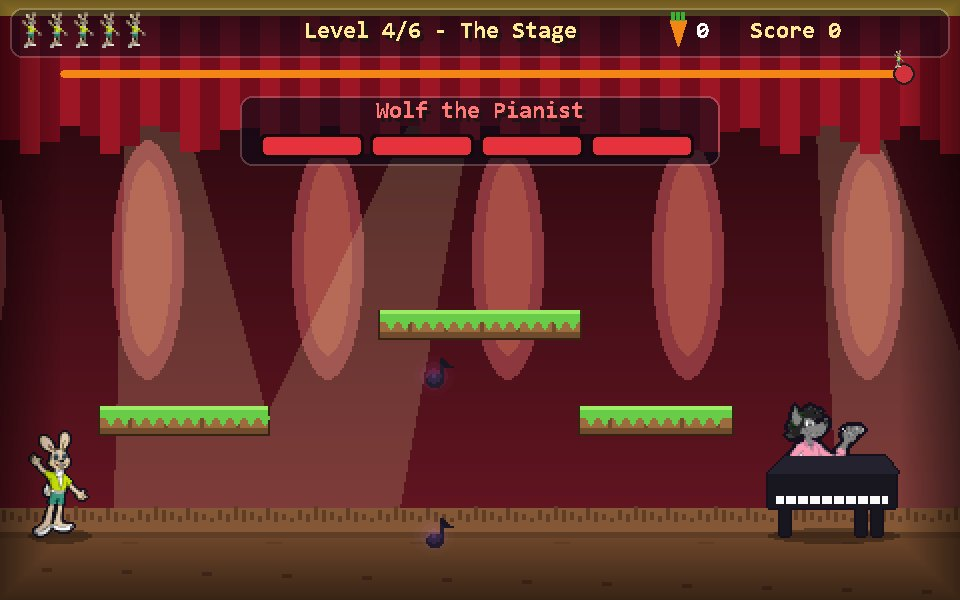
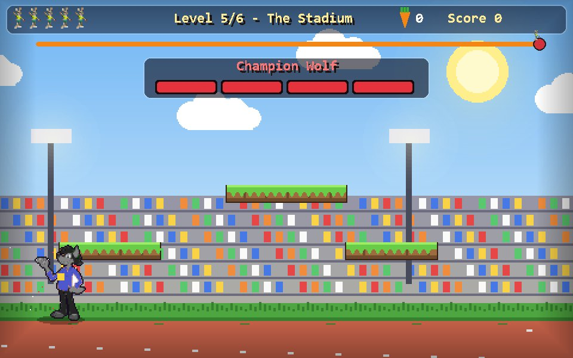
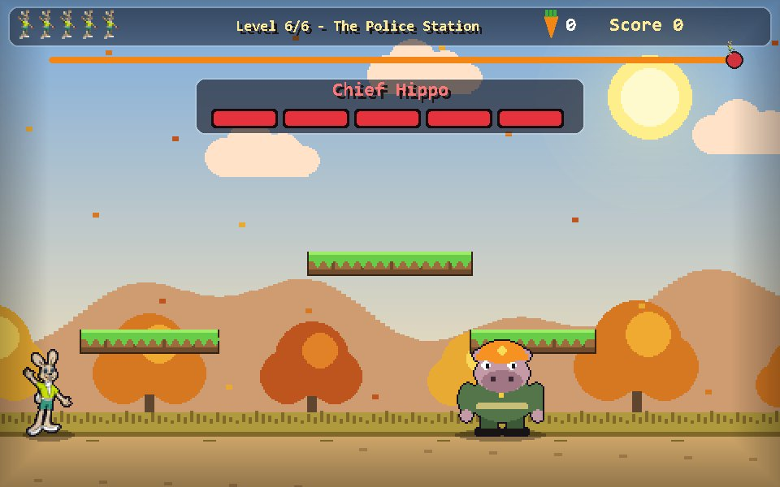

Nu, Pogodi!
A free pixel platformer fan game. Outrun the Wolf, stomp the bad guys, beat six bosses.

What's inside
Made with tiny pixels, cartoon cutscenes and a lot of carrots.
Two very different chapters
Chapter 1 is a chase: the Wolf is right behind you. Chapter 2 is a classic platformer with pits, enemies and bosses.
Six boss fights
A teleporting magician, a swooping pilot, a charging rhino, a piano-playing wolf, a champion sprinter and a stomping hippo.
Cartoon cutscenes
Every level is introduced by pixelated frames from the cartoon, told with short captions.
English, Polski, Русский
Pick your language when the game starts. Every caption, menu and message is translated.
Chronological story
Chapters unlock in order. Finish Chapter 1 and your progress is saved so Chapter 2 opens up.
Polished little details
Day, sunset and night themes, glowing lamps, dust, sparkles, screen shake and a fullscreen mode (F11).
Screenshots
Click any picture to enlarge it.
Chapters

Chapter 1: The Chase
Three levels. You are the Hare, the Wolf runs after you and never gets tired. Collect carrots, jump over bushes and stomp the Wolf's head to stun him. Reach the yellow balloon at the end of each level.
Chapter 2: The Big Show
Six levels, six bosses. Cross pits, stomp patrolling enemies, hit the checkpoint, then face the boss in a locked arena. Each level starts with a cartoon cutscene.


Chapter 3: Road Trip
Six new places from the later episodes: a highway, a village, the TV center, a building site, a science club and a fairy-tale dream. Moving platforms, springs, crushers, lasers and six brand-new bosses.
Chapter 4: First-Person Hunt
A first-person shooter! Fight through six mazes (episodes 17-22: island, supermarket, resort, dacha, snowy forest, the great tree) with your carrot launcher, then beat the boss waiting at the end.

Meet the bosses





Controls
| Run | ← → / A D |
| Jump (hold for a higher jump) | ↑ / W / Space |
| Start / skip a cutscene / continue | Enter / Space |
| Fullscreen on / off | F11 |
| Chapter 4: move / turn / fire | WASD / mouse or ← → / Space or click |
| Music on / off | M |
| Back to chapter select (quit from menus) | Esc |
Tip: landing on an enemy's head is how you beat it - and how you hurt a boss.
Download
One file, nothing to install. Double-click and play.
Windows says "Windows protected your PC". Is it safe?
The game is not code-signed, so SmartScreen warns about any unknown program. Click "More info", then "Run anyway". The game only reads its own files and writes one small save file.
Where is my progress saved?
In %APPDATA%\NuPogodi\save.json. Delete that file to reset the chapter locks.
Is it really free?
Yes. It is a non-commercial fan project and will stay free.